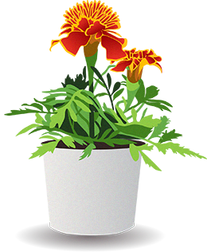
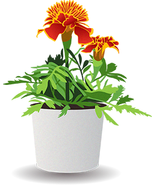

POWER PLANTS
Indigenous cultures have been using plants as medicines for centuries and centuries, and their cures have stood the test of time. Certainly, there's a thing or two we can learn from their practices. Amazingly enough, a lot of the plants and herbs we use regularly in our homes have hidden health benefits we may not be aware of! Click on each plant to find out what it is, and learn a bit more about what we can gain from it.
Basil is an extremely versatile herb you can add to many different dishes, and receive lots of benefits from. It contains powerful antioxidants, has antibacterial properties, promotes cardiovascular health, and even reduces stress! Next time you’re feeling stressed, consider making some homemade pesto and adding it to chicken or pasta. Learn more here!
Dandelions may be a problem on your lawn, but its a superhero for your health! It’s great for bone health, as it’s rich in calcium. Antioxidants keep the liver in good health, it can help control diabetes, treat urinary disorders, and is great for your skin! Dandelions may not be a regular part of your diet now, however it’s great as a tea or coffee from the stem & seeds, or the flowers can be fried up into fritters. Learn more here!
In addition to keeping you safe from vampires, garlic has a ton of other benefits for your health! It boosts the immune system, reduces blood pressure, lowers cholesterol, and improves athletic performance! Garlic is already used in a ton of different recipes, so it’s not hard to include it in your diet at all. Learn more here!
Ginger is a fantastic ingredient for your health! You can add it to a smoothie or juice, add it to stir fry, make tea from it, or dried it can be used as a spice. What are the benefits of eating lots of ginger? It’s great for digestion, reducing nausea, reducing inflammation, and even cardiovascular health! Learn more here!
St. Johns Wort has been used as a medicinal herb for over 2,000 years. It dates back to ancient Greece, as they believed it had mystical & protective qualities. It's used to naturally treat depression symptoms, aid PMS symptoms, improves mood, and more. It's primarily found in the form of medication. Learn more here!
Turmeric has been used as a medicinal herb for thousands of years, and for good reason. The active ingredient in turmeric is anti-inflammatory and a great anti-oxidant. It’s also been linked to improve brain functionality, lowers risk of heart disease, and may even delay aging. It's most commonly found in curry.Learn more here!
Marigold, in addition to being a gorgeous plant in your gardens, has a lot of surprising benefits. It's great to reduce inflammation, is a natural antiseptic, helps heal wounds, & can be used as a natural bug repellent. It can be added to ointments for its anti-inflammatory properties, or steeped into a tea for other benefits. Learn more here!
Yarrow has been used as a medicinal herb since ancient times across cultures, and is actually closely related to chamomile. For centuries its been used as a natural wound treatment, that stops bleeding and encourages healing. It also may have anti-anxiety effects, and can help remedy various gastrointestinal conditions. The plant can be used in soups/stews, salads, or can be a substitute for tarragon if used in dry herb form. Learn more here!
 
